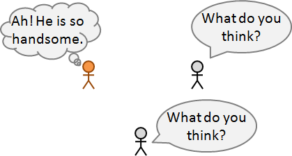
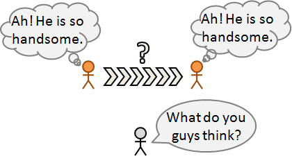
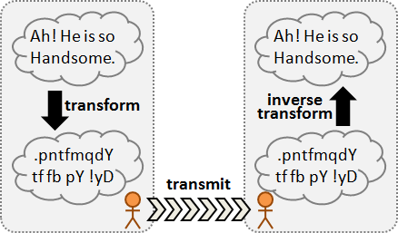
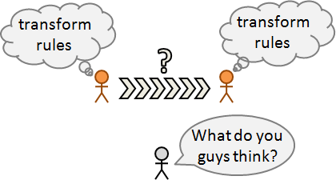
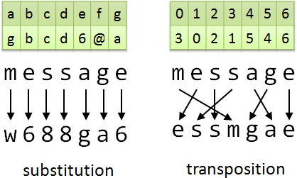

傳送秘密
秘密：一件事情，只有我知，外人不知。

如何在眾目睽睽下傳送秘密呢？

這裡提供兩個策略：掩、飾。
第一個策略是遮掩資料、包裝資料，導致外人看不見。比如寄信，我們使用信封，讓外人無法偷看資料。要驗證外人是否偷看資料，可以使用易碎膠帶；要阻止外人偷看資料，可以使用保險箱。
第一個策略在電腦世界行不通。資料在網路線中、空氣中傳送，包裝薄弱。只需接線、接收，有心人皆可直接取得資料。
第二個策略是修飾資料、加工資料，導致外人看不懂。比如行話，我們去到夜店說要冰塊和鹽，只有熟人才能理解話中有話。
第二個策略在電腦世界行得通。資料套用四則運算，就變得完全令人看不懂。套用反運算，就看得懂了。比如說字母從零開始編號，每個字母乘三加三模二十六，然後字串頭尾對調。

想要實行第二個策略，當事人必須先有共識，你知我知、外人不知；否則外人也能看懂你我傳送的秘密了。比如「從零開始編號……頭尾對調」就是共識。又比如我和你當眾說「老地方見」，外人聽了不知道是哪裡，但是你我早知道老地方是哪裡。外人一旦知道老地方是指什麼，外人就知道你我的行蹤了。

也就是說：你我必須先有共同秘密，才能傳送秘密！雞生蛋蛋生雞，總得起個頭。兩種解法：一、你我事先私下見面，約定第一個共同祕密。二、你我當眾揣摩彼此、塑造共識，形成第一個共同秘密。
你我擁有第一個共同秘密之後，即可利用遞推法，傳送更多秘密。比如過幾天我又和你說「上次隔壁那一家，東西也很棒，待會一起去。」你我分享了更多秘密，但是外人仍舊霧裡看花。
一件事情通常有各式各樣的解讀方式，理論上外人永遠無法正確解讀秘密。但是當傳送秘密越來越多，則解讀方式就越來越少。安全起見，三不五時就要更換第一個共同秘密。
A1與A2事先見面。
A1: 我跟你說，當我說「跑」，我們就逃跑。
A2: 好。
B1與B2事先見面。
B1: 我跟你說，當我說「跑」，我們就往前衝。
B2: 好。
後來A1A2B1B2通通上戰場，
C聽到他們說跑，但是不知道他們打算逃跑還是往前衝。
Encrypt / Decrypt
「加密」是改變資料外觀。「解密」是回復原本外觀。
資料加密之前叫做「明文plaintext」，加密之後叫做「密文ciphertext」。「加密」是明文變密文，「解密」是密文變明文。
encrypt
Thank you! --------> 3Q!
<--------
decrypt
encrypt
Fibonacci Sequence --------> 13-3-2-31-1-1-8-5
<--------
decrypt
UVa 425 11220 11385
Attack（Crack）（Cryptanalysis）
「攻擊」、「破解」、「密文分析」就是給定密文，找出明文，在不知道加密解密方式的情況下。
[ciphertext]
O, Draconian devil! Oh, lame saint. P.S. Find Robert Langdon.
please find plaintext.
即便外人不知道加密解密方式，外人還是可以用試誤法，窮舉各種加密解密可能性，一一嘗試解密，總有一種會成功。即便密文有很多種解讀方式，外人仍然可以大概猜出個端倪。
UVa 795 828 11697
加密解密基本原理：Substitution與Transposition
現今的加密演算法，通通都是換字面（Substitution）、換位置（Transposition）。這是最符合電腦運作特性的方式。

你我事先見面約定換字面、換位置的表格，不讓外人知道；如此一來，只有你我可以加密解密。
設計表格時，要注意密文是否可以正確還原成明文。用數學的術語來說就是：表格必須是一對一函數、必須擁有反函數。
UVa 306 458 468 554 641 726 850 856 865 10082 10222 10896 11278 11541 11946
攻擊基本原理：Frequency Analysis與Dictionary Attack
俗話說：「兵來將擋、水來土掩」。凡有加密解密方式，就有破解方式。
XPUBKPIU ZPKB O QOTUW OTRG JINWT GEJT SERROIN PF
IEZPFW NPXXWTWIK XTER XPUBKPIU ZPKB O FROQQ EIW
PK PF RWTWQG O HJWFKPEI EX PIFKPKJKPIU FPUIF OIN FPUIOQF
換字面的知名破解方式是統計出現頻率（Frequency Analysis）。首先統計英文對話當中每個英文字母的出現頻率，由高到低依序是etaoinshrdlucmfwypvbgkjqxz。通常密文出現最多次的符號八九不離十就是e！如果e讀起來不通順，那就試t，以此類推。
亦可統計英文對話當中每個英文單字的出現頻率，由高到低依序是the be to of and a in that等等。通常密文多半含有這些單字。
除了針對單一字母、單一單字進行統計，亦得針對雙字母、仨字母、雙單字、仨單字等進行統計，效果更佳。
HET TEGAR SUREAQ SAH ON SCERNOR
換位置的知名破解方式是查字典（Dictionary Attack）。窮舉字典裡面每一個單字，一一跟密文比對，看看字母數量是否一致、讀起來是否通順。Anagram就是這樣的遊戲。
以上提到的攻擊過程都是人工作業。想要寫程式自動作業，那麼讀者必須利用「Natural Language Processing」領域的知識，判斷破解之後的明文是不是可讀的句子、判斷最有可能出現的句子。
其他加密解密的原理
除了換字面、換位置以外，還有很多神奇的加解密原理，不過我沒有仔細研究，大家可以自行研究。
基於符號。換成看不懂的符號。例如火星文、顏文字。事實上我們可以拿編碼演算法、壓縮演算法，當作加密演算法。隨機取一個演算法，稍作修改，不告訴外人，就能利用此演算法加解密。
[ciphertext]
99，3qㄋ姑力i讀豬，偶會+ Uㄉ！
[plaintext]
舅舅，謝謝你鼓勵我讀書，我會加油的！
基於取樣。插入字母拼貼字母。例如《聖經密碼》固定間隔取字母。《火鳳燎原》的城下一聚也很類似。
[ciphertext]
Rips ExplAineD thaT eacH codE is a Case Of adDing
[plaintext]
READ THE CODE
基於推理。分析探索已知未知。例如猜數字魔術。例如下面的益智謎題：
X先生、Y先生都具有足夠的推理能力。
這天，他們正在接受推理面試。
他們知道桌子的抽屜裡有如下16張撲克牌:
紅心 A、Q、4
黑桃 J、8、4、2、7、3
梅花 K、Q、5、4、6
方塊 A、5
約翰教授從這16張牌中挑出一張牌來，
並把這張牌的點數告訴X先生，
把這張牌的花色告訴Y先生。
這時，
約翰教授問X先生和Y先生:
你們能從已知的點數或花色中推知這張牌是什麼牌嗎?
X先生:「我不知道這張牌。」
Y先生:「我知道你不知道這張牌。」
X先生:「現在我知道這張牌了。」
Y先生:「我也知道了。」
請問:這張牌是什麼牌?